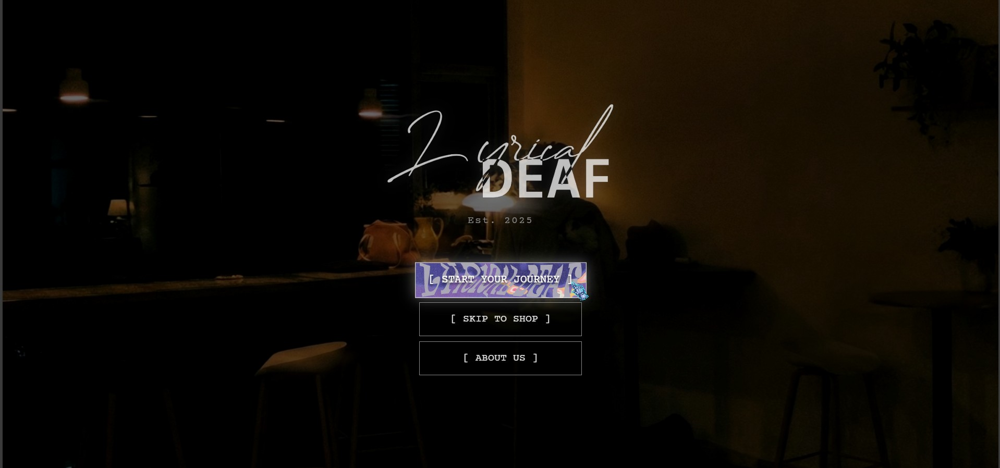
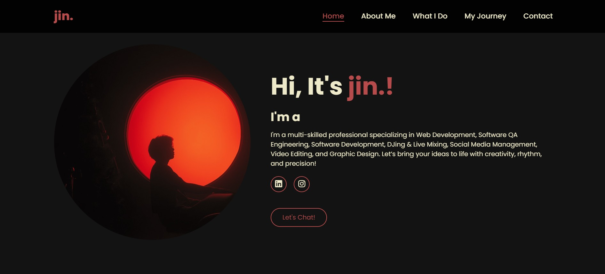

Building responsive, user-centric digital experiences that blend aesthetic precision with clean, efficient code.

A bespoke e-commerce experience for our upcoming clothing brand. This project translates the brand's "Feel the Sound" philosophy into a visual digital journey.

A central hub showcasing my multi-disciplinary career. Designed to be professional yet expressive of my personal brand identity.
Sites that look perfect on phones, tablets, and desktops.
Optimized code for quick loading and smooth performance.
Inclusive design practices ensuring usability for all.
Structured data to help your site rank better.
From concept to code, I bring ideas to life on the web.
Start a Project